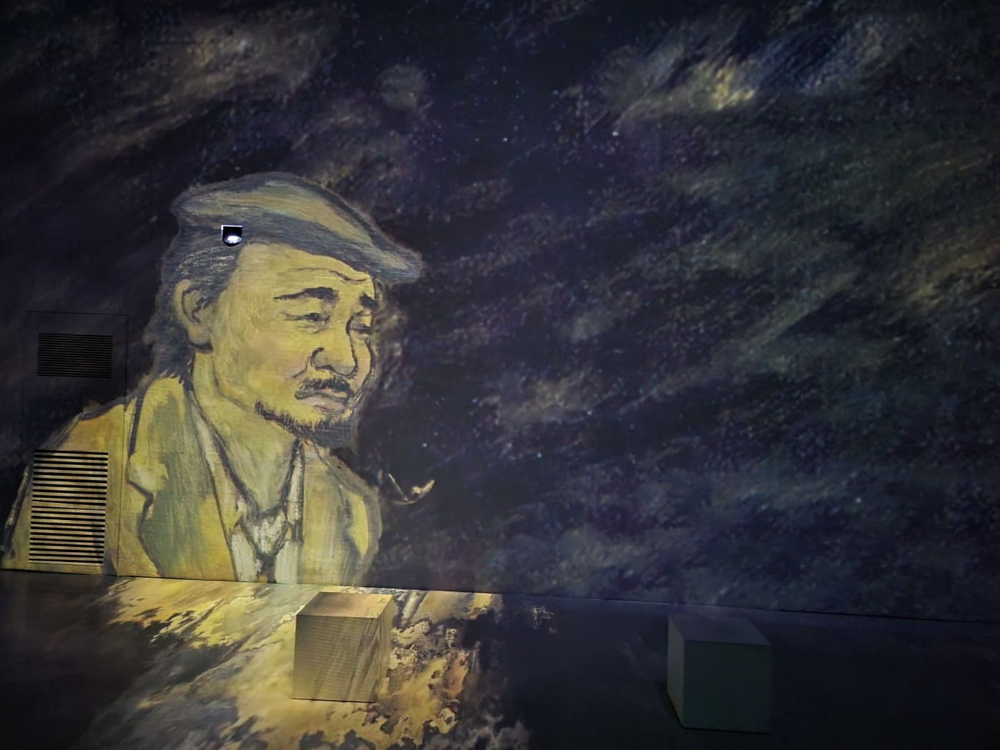
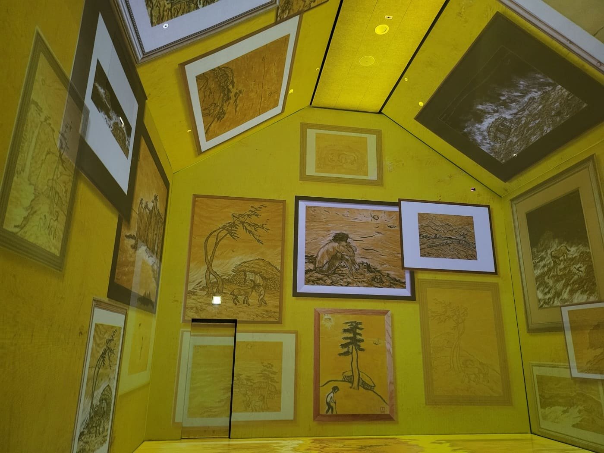
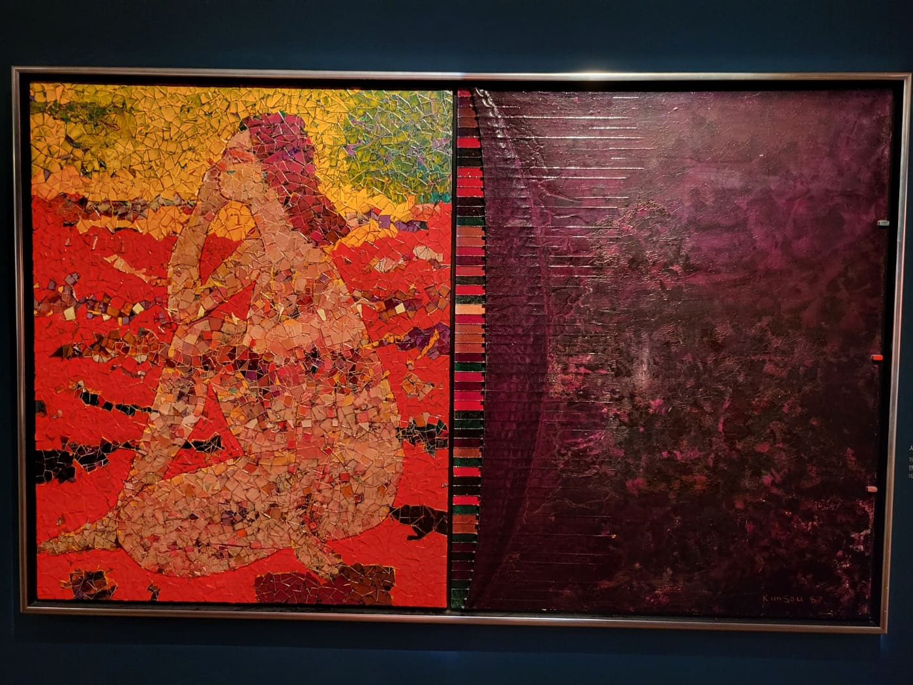
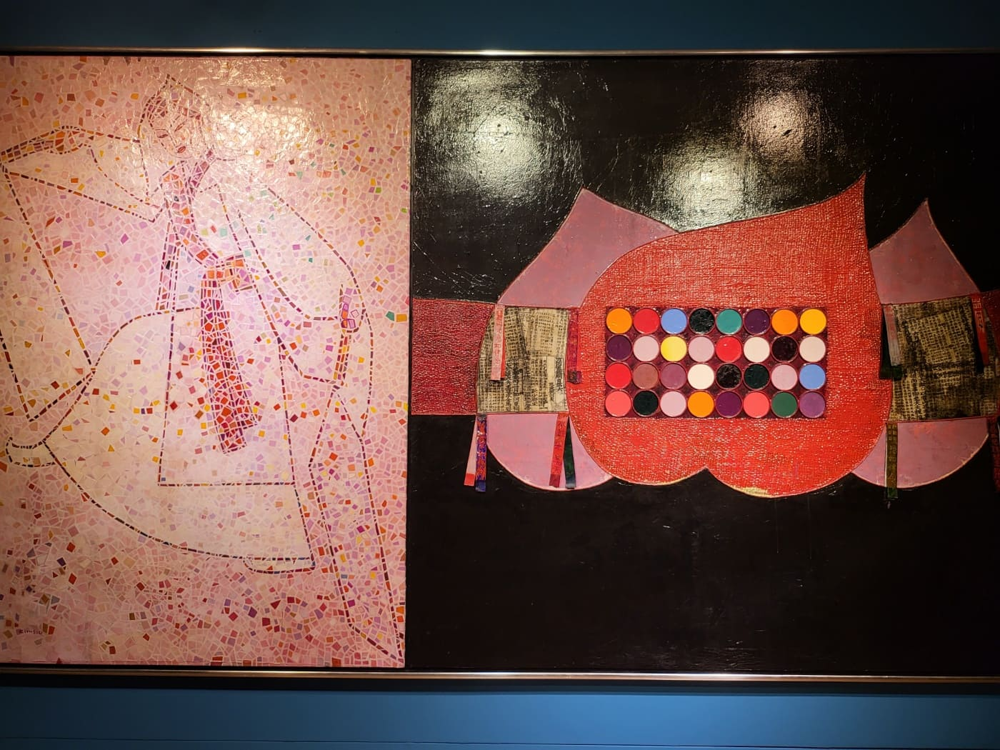
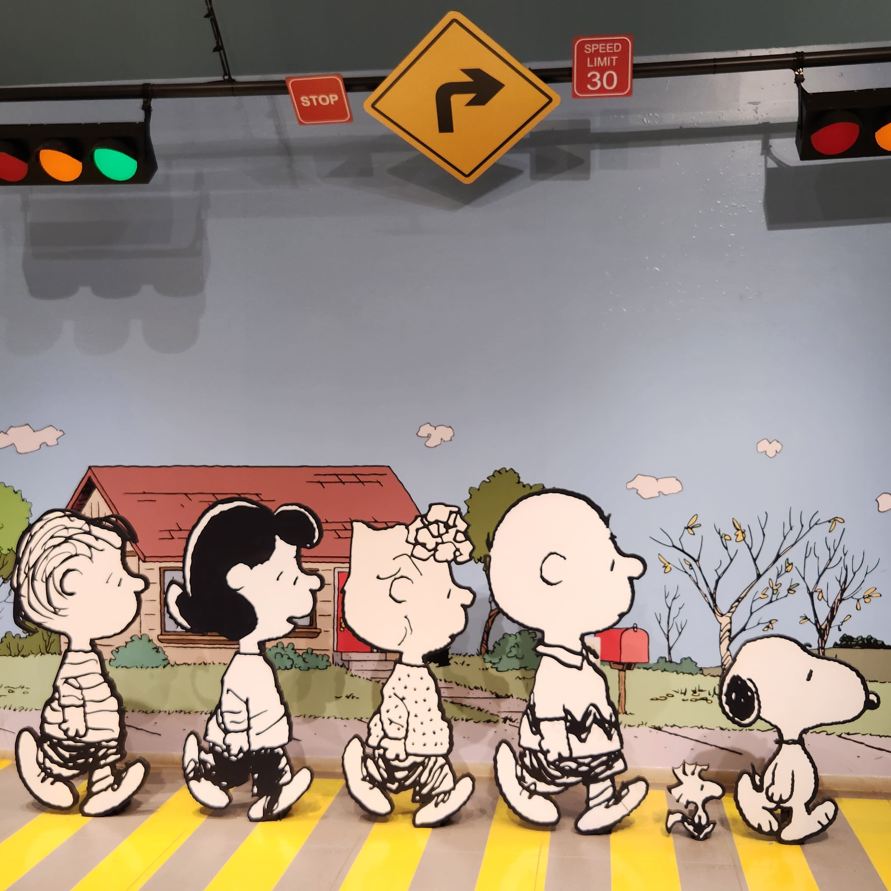
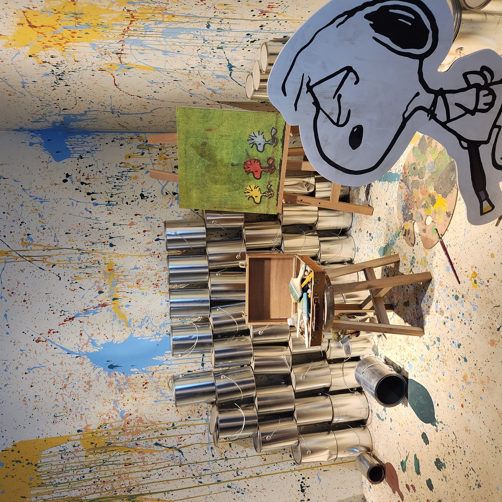
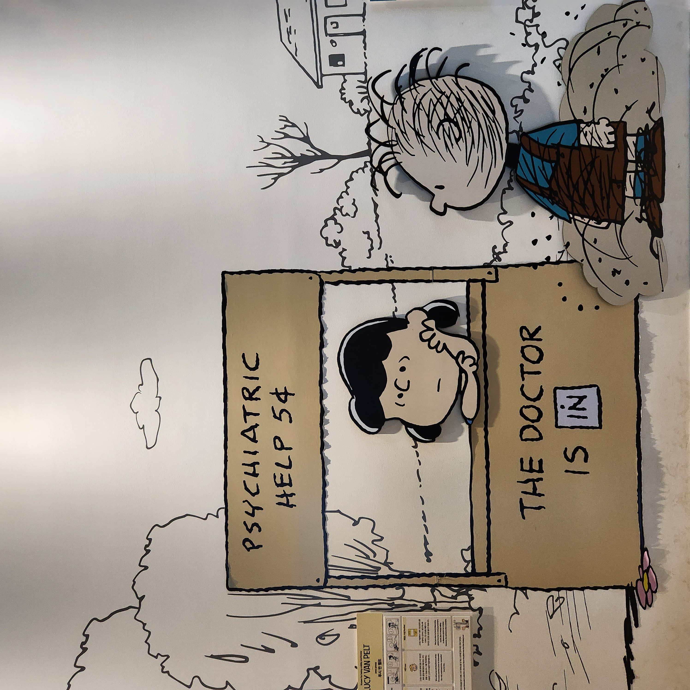
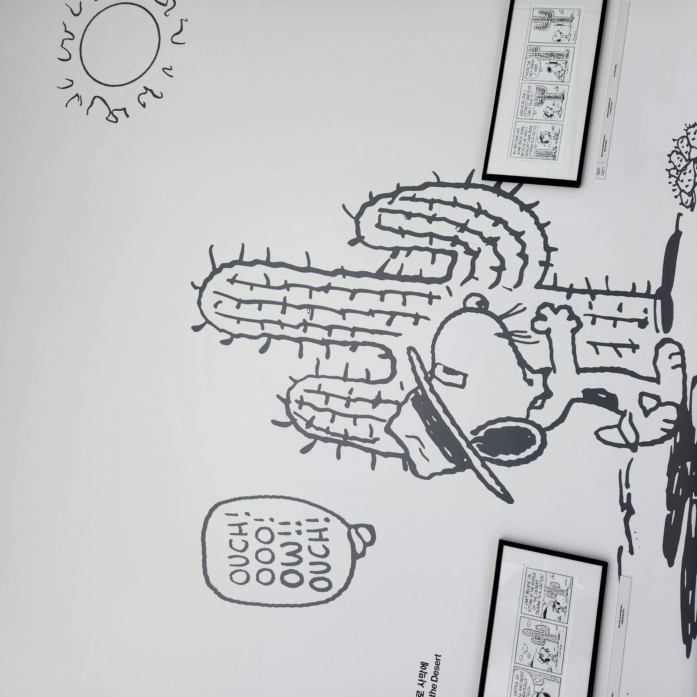

변시지 작가
[자화상]은 변시지 작가의 깊은 내면을 드러내는 작품이다. 그의 서정적인 표현과 섬세한 감정의 묘사가 있다. 변시지는 일상의 소소한 순간들을 통해 인간의 복잡한 감정과 삶의 무게를 잘 그려낸다. 그의 작품 속에서는 자신과의 대화가 펼쳐진다. 이러한 깊이와 감성적인 표현력으로 인해 [자화상]은 많은 이들에게 감동과 여운을 주었다.
액자들
[변시지: 황금빛 고독, 폭풍의 바다]는 변시지의 작품 전시 명이다. 그의 독특한 작품세계를 잘 보여준다. 황금빛 고독과 폭풍의 바다라는 상반된 두 가지 요소를 결합하여 인간의 내면적인 갈등과 모순을 표현한다. 변시지는 이러한 상반된 감정과 경험을 섬세하게 표현한다. 독자에게 깊은 공감과 생각을 유발한다.
김흥수 작가
[사랑을 온 세상에]은 김흥수 화가의 대표적인 작품 중 하나로 알려져 있다. 이 작품은 김흥수 화가의 독특한 스타일과 감성을 잘 보여주는 작품이다. 대체로 독특한 색채와 섬세한 브러시 터치로 구성되어 있다. 이 작품에서는 붉은 색상이 주요한 요소로 사용된다. 이를 통해 작품의 감정적인 톤과 분위기를 강조하고 있다. 붉은 여인의 표정과 자세, 그리고 배경과의 조화는 관람객에게 다양한 해석의 여지를 제공한다.
여자 옆모습

천 위에 여자의 옆모습을 그린 그림들은 독특한 미적 감각과 신비로운 분위기로 관람객들의 눈길을 사로잡는다. 이러한 작품들은 그 자체로 신비로움과 아름다움을 동시에 담고 있다. 천을 배경으로 한 여자의 옆모습은 미스터리와 우아함을 동시에 연출한다. 관람객의 상상력을 자극한다. 감정적인 공감과 깊은 여운을 주곤 한다.
하모니즘
김흥수의 [승무도]는 그의 대표적인 작품 중 하나이다. 그의 독특한 미술적 스타일과 철학을 잘 반영하고 있다. 이 작품은 전통적인 한국의 무도(무술)를 현대적인 시각으로 재해석한 것이다. 그의 문화적 배경과 예술적 열정을 잘 보여준다. 전통적인 무도의 동작과 자세를 추상적이고 동시에 유니크하게 표현한다. 색채의 조화와 브러시 터치는 작품의 에너지와 움직임을 강조한다.
판화

판화는 독특한 표현 방식과 저렴한 가격으로 미술에 대한 접근성을 높다. 이는 문화와 역사를 반영하는 중요한 자료로도 인정받는다. 다양한 주제와 스타일로 관람객들의 관심을 끕니다. 예술가들의 창의성과 노하우가 결합된 판화는 다양한 이유로 많은 이들의 마음을 사로잡고 있습니다.
횡단보도
횡단보도 세트장에 줄지어 있는 스누피 등신대는 일상의 흔한 장면을 독특하게 표현한다. 스누피는 그 자체로 사랑받는 캐릭터이다. 일상의 모습과는 다르게 등신대로 변신한 모습은 흥미로움과 재미를 동시에 제공한다. 보는 이에게 웃음과 함께 재치 있는 메시지를 전달한다. 이러한 뜻밖의 조합은 창의성과 독창성을 강조한다.
물감
물감이 자유롭게 뿌려진 방 내부에는 은색 페인트통이 쌓여 있다. 스누피 등신대가 놓여 있는 장면은 미술과 캐릭터의 독특한 조합을 보여준다. 이러한 비정형적인 방식은 관습적인 미술의 경계를 넘어서는 실험적인 예술의 표현을 보여준다. 스누피 등신대는 이 장면에 독특한 색채와 개성을 더한다. 이런 뜻밖의 조합은 관람객들에게 새로운 시각과 감정을 자극한다.
스누피
하얀 벽에 그려진 벽화와 갈색 간판이 있는 작은 가게 안에서 캐릭터와 스누피 캐릭터가 함께 있다. 독특하고 매력적인 시각적 조합을 보여준다. 벽화와 간판은 가게의 아름다운 분위기와 특별한 개성을 부각시킨다. 일상과 예술이 어우러진 공간에서 창의성과 상상력의 힘을 강조한다. 캐릭터와 스누피는 관람객들에게 익숙하면서도 새로운 느낌을 준다. 작은 가게 안의 아늑하고 따뜻한 분위기를 표현한다.
벽화
하얀 벽에 검정 선으로 그려진 벽화이다. 선인장과 스누피가 그려져 있는 장면은 단순하면서도 독특한 아트워크의 조합을 보여준다. 이런 단순화를 하는 작품은 벽화의 간결함과 깊이를 동시에 표현한다. 선인장과 스누피는 각각의 개성과 매력을 더해준다. 스누피는 귀여움과 재치를 통해 따뜻한 감정을 전달한다. 두 개체가 함께 그려진 이 작품은 자연과 캐릭터의 조화로움을 표현한다.